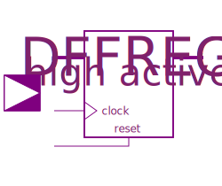
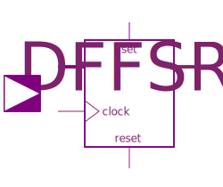
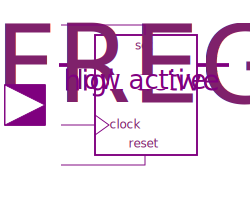

Registers is a collection of flipflops and latches. In the opposite to the Examples.Utilities models the Register models are a series of assignments in the algorithm part of the model. The model text is taken nearly identical from the standard logic text.
| Name | Description |
|---|---|
| Edge triggered register bank with reset | |
|  DFFREG | Edge triggered register bank with high active reset |
| Edge triggered register bank with low active reset | |
|  DFFSR | Edge triggered register bank with set and reset |
| Edge triggered register bank with high active set and reset | |
|  DFFREGSRL | Edge triggered register bank with low active set and reset |
| Level sensitive register bank with reset | |
| Level sensitive register bank with reset active high | |
| Level sensitive register bank with reset active low | |
| Level sensitive register bank with set and reset | |
| Level sensitive register bank with set and reset, active high | |
| Level sensitive register bank with set and reset, active low |